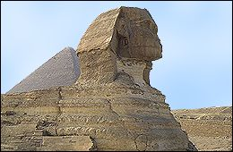

|
Pyramids of Giza

Pyramids of Giza
Khufu's pyramid
The largest of the three stone pyramids of Giza was built for the pharaoh Khufu (called Cheops by the Greeks). It stands 147 metres high and its estimated weight is about 6,500,000 tonnes.
Khafra's pyramid
The second of the Giza pyramids was built for the pharaoh Khafra (called Chephren by the Greeks). It was built on higher ground than Khufu's pyramid, so it looks taller than Khufu's pyramid, but it is actually shorter.
The Great Sphinx
The Great Sphinx is a large statue carved out of stone. It is located near Khafra's pyramid on the Giza plateau. The Great Sphinx has the body of a lion and the head of a human.

The Great Sphinx
Menkaura's pyramid
The smallest of the three pyramids at Giza was built for the pharaoh Menkaura (called Mycerinus by the Greeks).
Close
|